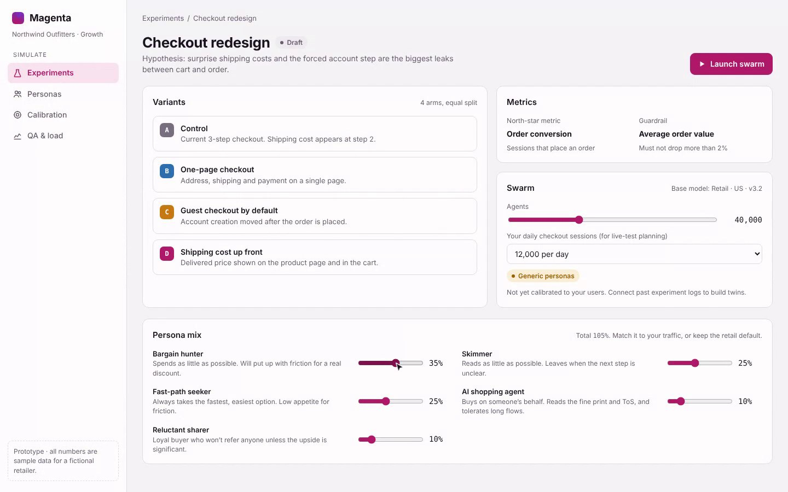
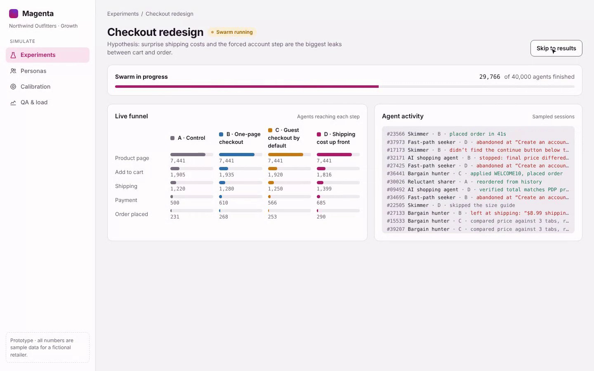
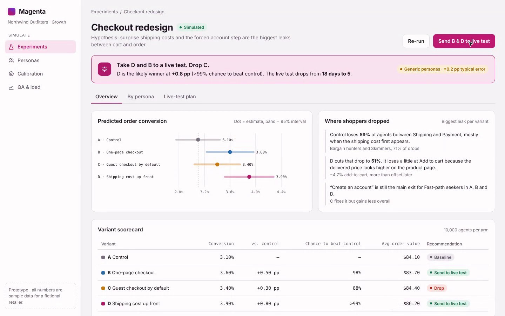
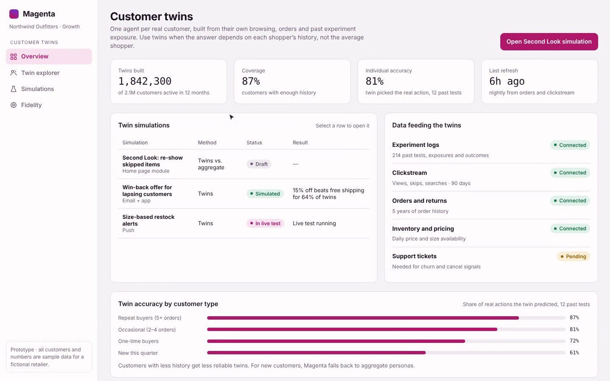

01 / TRAFFIC
Too many variants
Every extra test arm needs more users. Teams end up guessing which ideas to cut before a test even starts.
Magenta uses AI agents that emulate consumer behavior to evaluate product experiences before they reach real customers. Narrow the field, learn faster, and put live traffic behind the ideas worth testing.
Simulate first. Validate with real customers. Make better decisions.
Consumer teams have more ideas than they can test. Every variant competes for traffic, time, and statistical power—and real customers experience every losing version along the way.
Every extra test arm needs more users. Teams end up guessing which ideas to cut before a test even starts.
Small lifts need large samples. Tests and long-term holdouts can take weeks or months to settle.
Clicks can rise while revenue and retention remain inconclusive. The metric that matters is often the hardest to move.
People in a bad experience can churn or simply not come back. Learning has a customer cost.
Start with a behavioral model, calibrate it against real outcomes, then build customer twins when the question calls for individual-level understanding.
Run generic behavioral personas through product experiences to compare variants, uncover friction, and identify promising directions.
Useful from day oneRun agents and real users through the same experience. Measure the gap and tune the behavioral model against observed outcomes.
Ground predictions in realityUse historical experiment logs to create agent twins of individual customers for questions aggregate personas cannot answer.
Individual-level insightA workspace for configuring experiments, observing simulated journeys, comparing variants, and exploring customer-level behavior.

Define variants, metrics, agent volume, and behavioral personas.

Inspect agent activity and how different personas move through an experience.

Review predicted conversion, drop-off patterns, and variant-level results.

Understand how individual-level behavioral models can add context beyond aggregates.
Use simulated agents to explore product experiences from different angles before and during development.
Narrow many variants down to the few worth putting in front of live traffic.
Have agents exercise edge cases and product flows before customers do.
Simulate large volumes of concurrent shoppers, including AI agents acting on people's behalf.
The right answer is not always visible in aggregate data. Some product experiences depend on the history and preferences of each customer.
From the team's experience working on Facebook Dating, aggregate personas can help reason about broad behavior, while customer twins can capture patterns that depend on an individual's history.
Auto-matched two people once a week. Aggregate behavior can help estimate messaging propensity.
Re-showed people a user had passed on. Individual history and candidate pools matter.
Historical feature outcomes cited in the founders' pitch materials; not results from Magenta simulations.
We are building toward more useful predictions—not claiming that simulated behavior replaces customers.
Purely visual or subjective choices—like a red button versus a blue one—still need human testing.
Customer twins become useful when a company has enough historical experiment and behavioral data to calibrate them.
Individual-level twins are more expensive to run than aggregate personas. Reducing that cost is part of the R&D challenge.
Magenta helps prioritize what to test. Real-world experiments remain the way to validate outcomes.
Former Senior Staff PM and Consumer GenAI Lead at Netflix; Staff PM at Meta across Instagram, Threads, and Facebook; Senior PM at Honey.
Staff Software Engineer at Meta across Instagram, Threads, and Messenger; previously Senior Software Engineer at Tripadvisor.
We're talking with consumer product teams about the future of AI-powered experimentation. If you're exploring this problem, we'd love to hear from you.
Get in touch ↗